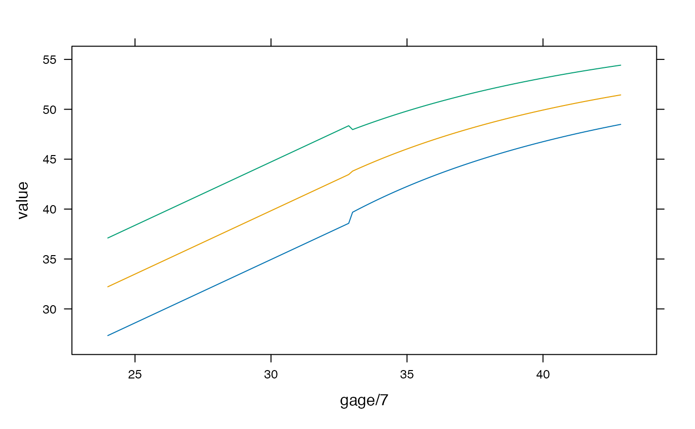

R/standard_igb.R
igb_zscore2var.RdConvert INTERGROWTH z-scores/centiles to birth measurements
igb_zscore2lencm(gagebrth, z = 0, sex = "Female")
igb_zscore2wtkg(gagebrth, z = 0, sex = "Female")
igb_zscore2hcircm(gagebrth, z = 0, sex = "Female")
igb_zscore2wlr(gagebrth, z = 0, sex = "Female")
igb_centile2lencm(gagebrth, p = 50, sex = "Female")
igb_centile2wtkg(gagebrth, p = 50, sex = "Female")
igb_centile2hcircm(gagebrth, p = 50, sex = "Female")
igb_centile2wlr(gagebrth, p = 50, sex = "Female")gestational age at birth in days
z-score(s) to convert
"Male" or "Female"
centile(s) to convert (must be between 0 and 100)
For gestational ages between 24 and 33 weeks, the INTERGROWTH very early preterm standard is used.
International standards for newborn weight, length, and head circumference by gestational age and sex: the Newborn Cross-Sectional Study of the INTERGROWTH-21st Project Villar, José et al. The Lancet, Volume 384, Issue 9946, 857-868
INTERGROWTH-21st very preterm size at birth reference charts. Lancet 2016 doi.org/10.1016/S0140-6736(16) 00384-6. Villar, José et al.
# get 99th centile for Male birth weights across some gestational ages
igb_centile2wtkg(168:300, 99, sex = "Male")
#> [1] 0.9991985 1.0186739 1.0384696 1.0585902 1.0790402 1.0998242 1.1209468
#> [8] 1.1424126 1.1642266 1.1863934 1.2089179 1.2318051 1.2550599 1.2786874
#> [15] 1.3026927 1.3270809 1.3518573 1.3770272 1.4025958 1.4285686 1.4549511
#> [22] 1.4817488 1.5089673 1.5366123 1.5646895 1.5932047 1.6221637 1.6515726
#> [29] 1.6814372 1.7117637 1.7425582 1.7738270 1.8055762 1.8378124 1.8705418
#> [36] 1.9037710 1.9375065 1.9717551 2.0065234 2.0418183 2.0776467 2.1140154
#> [43] 2.1509315 2.1884022 2.2264347 2.2650362 2.3042141 2.3439758 2.3843289
#> [50] 2.4252810 2.4668398 2.5090130 2.5518086 2.5952345 2.6392988 2.6840095
#> [57] 2.7293750 2.7754036 2.8221036 2.8694835 2.9175521 2.9663179 3.0157898
#> [64] 3.0564180 3.0955936 3.1342758 3.1724682 3.2101759 3.2474019 3.2841504
#> [71] 3.3204248 3.3562286 3.3915659 3.4264403 3.4608566 3.4948170 3.5283240
#> [78] 3.5613826 3.5939964 3.6261678 3.6579000 3.6891984 3.7200645 3.7505016
#> [85] 3.7805132 3.8101031 3.8392735 3.8680271 3.8963698 3.9243013 3.9518260
#> [92] 3.9789462 4.0056661 4.0319877 4.0579147 4.0834500 4.1085945 4.1333530
#> [99] 4.1577278 4.1817214 4.2053359 4.2285764 4.2514424 4.2739387 4.2960668
#> [106] 4.3178294 4.3392300 4.3602701 4.3809523 4.4012807 4.4212552 4.4408793
#> [113] 4.4601555 4.4790866 4.4976743 4.5159215 4.5338306 4.5514030 4.5686409
#> [120] 4.5855474 4.6021249 4.6183750 4.6342991 4.6499014 4.6651828 4.6801452
#> [127] 4.6947905 4.7091219 4.7231409 4.7368487 4.7502495 4.7633430 4.7761319
# recreate figure from preterm paper
d <- expand.grid(centile = c(3, 50, 97), gage = 168:300)
d$value <- igb_centile2lencm(d$gage, d$centile, sex = "Male")
lattice::xyplot(value ~ gage / 7, groups = centile, data = d, type = "l")
